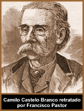
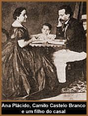

Camilo
Ferreira Botelho Castelo Branco nasceu em Lisboa, no dia 16 de
Março de 1825, na freguesia dos Mártires, num prédio
da Rua da Rosa. Filho de Manuel Joaquim Botelho Castelo Branco
e de Jacinta Rosa do Espírito Santo Ferreira, foi batizado
na Igreja dos Mártires a 14 de Abril de 1825. Tornou-se
órfão de mãe com apenas um ano de idade;
aos dez, órfão de pai. Desamparado, foi encaminhado
aos cuidados de uma tia em Vila Real. Aos quatorze anos, passou
a viver com uma irmã mais velha na mesma cidade. Assim,
sua educação acadêmica ficou sob responsabilidade
dos clérigos daquela região.
Em 1841, com apenas dezesseis anos,
casa-se com Joaquina Pereira. Ao completar dezoito anos, matricula-se
na Faculdade de Medicina na cidade do Porto, mas não dá
continuidade ao curso. Em 1844, envereda-se por uma vida boêmia
na noite portuária, entre os cabarés e os prostíbulos.
No ano de 1846, Camilo inicia um
romance com Patrícia Emília e foge com a amante
para a cidade do Porto. Nesta época, publica um artigo
de cunho político no qual criticava avidamente o governador
civil José Cabral Teixeira de Moraes. Suas críticas
lhe renderam um espancamento pelo capanga do governador.
A relação com Patrícia
Emília iniciara sem que Camilo houvesse se separado de
Joaquina Pereira. Deste modo, é acusado e preso por bigamia.
Após obter a liberdade, em 1848, abandona Patrícia
e também não retorna aos braços de Joaquina.
Volta a viver com a irmã, já residente em Covas
do Ouro, e dedica-se ao jornalismo, envolvendo-se em amores passageiros.
Nesta mesma época, conhece Ana Plácido, escritora
e noiva de um comerciante brasileiro chamado Manuel Pinheiro Alves
(que seria retratado de modo depreciativo e indireto nas novelas
de Camilo Castelo Branco).
Camilo e Ana Plácido iniciam
um relacionamento paralelo. Quando Ana casa-se com Manuel Pinheiro,
o escritor abala-se profundamente e busca refúgio na religião.
Passa a freqüentar o seminário por aproximadamente
dois anos, entre 1850 e 1852. Entretanto, acaba por envolver-se
amorosamente com uma freira chamada Isabel Cândida. Extremamente
desiludido, Camilo tenta suicídio ao abandonar o seminário.
O relacionamento adúltero
com Ana, é retomado anos mais tarde e ambos fogem para
viver juntos. No entanto, são encontrados e capturados
em 1861. A relação causou um forte impacto sobre
a opinião pública portuguesa. Era o modelo das narrativas
românticas nas quais todas as convenções sociais
são ignoradas em nome de uma causa; neste caso, o sentimento
que os unia. Camilo é condenado e torna-se prisioneiro
na "Cadeia da Relação do Porto", onde
conheceu o famoso criminoso português Zé do Telhado.
Neste mesmo período, escreve uma de suas obras mais famosas:
Memórias do Cárcere. Após conquistar
a liberdade, a esta altura já com trinta e oito anos, o
escritor e sua amante retomam o romance e passam a viver juntos
em São Miguel de Seide.
Ana
Plácido dá à luz a um filho que, teoricamente,
era de seu antigo marido. Neste momento, a família já
conta com dois filhos de relacionamentos anteriores de Camilo
somando-se ao recém-nascido de sua atual esposa. Em 1863,
Manuel Pinheiro Alves falece e o casal passa a viver com mais
conforto na propriedade do comerciante falecido, em São
Miguel de Seide. Mas a fraca saúde dos filhos do casal,
obriga Camilo a escrever sob encomenda para sustentar as finanças.
Suas novelas são narrações curtas que abordam
temas cotidianos e vão de encontro à predileção
literária do leitor emergente e consumidor lusitano. Neste
momento, Camilo passa a ser o primeiro escritor português
a viver exclusivamente da própria literatura.
Assim, nos anos que se seguiram,
Camilo foi autor de mais de duzentas e sessenta obras como comédias,
folhetins, poesias, ensaios, prefácios, traduções
e cartas sob os pseudônimos de Manoel Coco, Arqui-zero,
Saragoçano (entre outros), sendo tudo redigido à
pena, sem o auxílio de qualquer recurso mecânico.
Em 1885, obtém o título
de Visconde de Correia Botelho. Três anos mais
tarde, casa-se oficialmente com Ana Plácido. Porém,
uma cegueira, causada pela sífilis, que o destituía
gradativamente de suas funções literárias
e as conseqüentes limitações financeiras, abalavam
a estabilidade da família. Após uma consulta com
um oftalmologista que atestara a gravidade de sua situação,
desesperado, Camilo Castelo Branco suicida-se com um tiro na cabeça,
na tarde de 1º de Junho de 1890. Ana Plácida faleceu
cinco anos mais tarde.
Sua imensa obra teve o período
mais fértil a partir de 1860. Seus livros mais conhecidos
manifestam intimamente suas experiências no cárcere,
abordando temas como o amor reprimido e exasperado, como em O
romance de um homem rico (1861), Amor de perdição
(1862), Amor de salvação (1864), entre
outros.
As maiores influências de
Camilo Castelo Branco remetem à Almeida Garret e Ann
Radcliffe; sendo a orfandade, a bastardia e o anticlericalismo
temas recorrentes. Porém, a totalidade de sua obra não
está arraigada apenas sobre as bases do Romantismo; uma
parcela também é classificada dentro do Realismo.
O próprio autor cita no prefácio de Eusébio
Macário: "tenho sido realista sem o saber.
Nada me impede de continuar".
Por
Spectrum
Obras
Disponíveis:
Contos (Downloads)